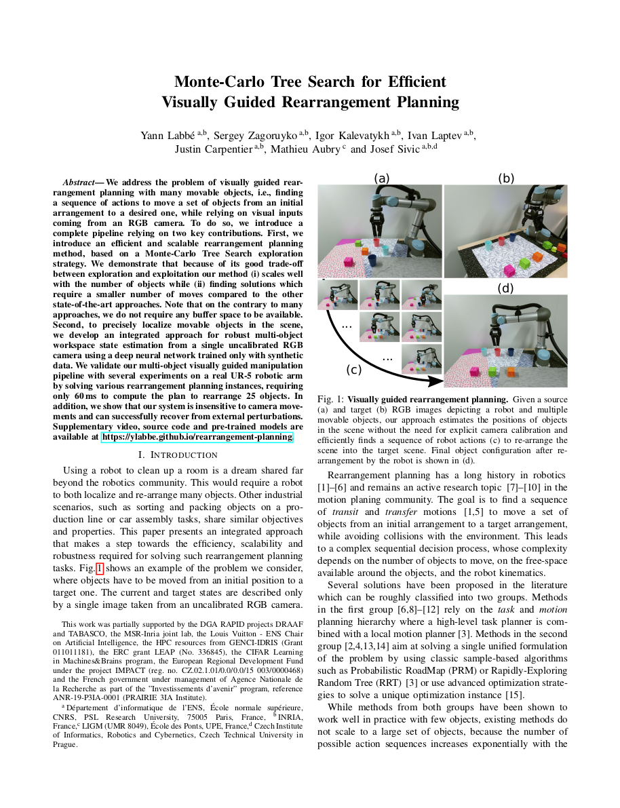

We address the problem of visually guided rearrangement planning with many movable objects, i.e., finding a sequence of actions to move a set of objects from an initial arrangement to a desired one, while relying on visual inputs coming from an RGB camera. To do so, we introduce a complete pipeline relying on two key contributions. First, we introduce an efficient and scalable rearrangement planning method, based on a Monte-Carlo Tree Search exploration strategy. We demonstrate that because of its good trade-off between exploration and exploitation our method (i) scales well with the number of objects while (ii) finding solutions which require a smaller number of moves compared to the other state-of-the-art approaches. Note that on the contrary to many approaches, we do not require any buffer space to be available. Second, to precisely localize movable objects in the scene, we develop an integrated approach for robust multi-object workspace state estimation from a single uncalibrated RGB camera using a deep neural network trained only with synthetic data. We validate our multi-object visually guided manipulation pipeline with several experiments on a real UR-5 robotic arm by solving various rearrangement planning instances, requiring only 60 ms to compute the plan to rearrange 25 objects. In addition, we show that our system is insensitive to camera movements and can successfully recover from external perturbations.
|  |
Y. Labbé, S. Zagoruyko, I. Kalevatykh, I. Laptev, J. Carpentier, M. Aubry and J. Sivic Monte-Carlo Tree Search for Efficient Visually Guided Rearrangement Planning IEEE Robotics and Automation Letters, 2020 [Paper on arXiv] |
@ARTICLE{labbe2020,
author={Y. {Labbe} and S. {Zagoruyko} and I. {Kalevatykh} and I. {Laptev} and J. {Carpentier} and M. {Aubry} and J. {Sivic}},
journal={IEEE Robotics and Automation Letters},
title={Monte-Carlo Tree Search for Efficient Visually Guided Rearrangement Planning},
year={2020}}
We thank Loïc Esteve and Ignacio Rocco for helpful discussions. This work was partially supported by the DGA RAPID projects DRAAF and TABASCO, the MSR-Inria joint lab, the Louis Vuitton - ENS Chair on Artificial Intelligence, the HPC resources from GENCI-IDRIS (Grant 011011181), the ERC grant LEAP (No. 336845), the CIFAR Learning in Machines\&Brains program, the European Regional Development Fund under the project IMPACT (reg. no. CZ.02.1.01/0.0/0.0/15 003/0000468) and the French government under management of Agence Nationale de la Recherche as part of the "Investissements d'avenir" program, reference ANR-19-P3IA-0001 (PRAIRIE 3IA Institute).
The documents contained in these directories are included by the contributing authors as a means to ensure timely dissemination of scholarly and technical work on a non-commercial basis. Copyright and all rights therein are maintained by the authors or by other copyright holders, notwithstanding that they have offered their works here electronically. It is understood that all persons copying this information will adhere to the terms and constraints invoked by each author's copyright .